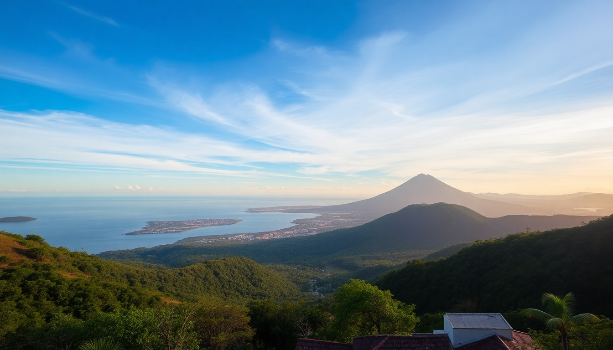

Best Day Trips from San José: Volcano, Falls & Canal

I spent a week based in San José and wanted to see more than the city’s museums and markets. Three day trips kept coming up in every conversation: a volcano that actually smokes, a waterfall complex you can walk behind, and a jungle canal system that feels like a different country. I did all three. Here’s what worked, what didn’t, and exactly how to plan each one without wasting daylight.
Is Poás Volcano worth the early morning?
Yes, but only if you commit to a 6 a.m. departure. Poás Volcano National Park limits entry to 500 visitors per day, and the crater is often clouded over by 10 a.m. We booked a spot on a guided tour that picked us up from our hotel in Barrio Amón at 5:45 a.m. By 7:30 we were at the main overlook, staring into a turquoise acid lake that actually steamed. The sulfur smell is real — bring a mask or scarf if you’re sensitive.
- Main crater overlook — the primary attraction, a 300-meter-wide active crater with visible fumaroles
- Botero Lagoon — a short walk from the main crater; less crowded, good for birdwatching
- Museum and visitor center — small but informative, covers volcanic activity and local ecology
- Entry fee — $15 for foreigners, but most tours include it; reserve online at least 48 hours ahead
The drive from San José takes about 90 minutes via the Autopista Bernardo Soto. Roads are well-paved but winding. We stopped for coffee at a roadside soda in Poásito — nothing fancy, but the chorreada (corn pancake) with natilla was a solid breakfast.
Can you really do La Paz Waterfall Gardens in half a day?
You can, but you’ll rush. La Paz Waterfall Gardens is a private nature reserve about an hour north of San José, near the town of Vara Blanca. It’s a curated experience — think paved paths, railings, and signage — which makes it easy for families or anyone who doesn’t want to hike muddy trails. The highlight is the waterfall sequence: five separate falls you can view from platforms, with the tallest dropping about 120 feet.
- Magia Blanca waterfall — the most photogenic; you can stand directly behind the curtain of water
- Templo waterfall — quieter, less crowded, good for a longer stop
- Butterfly observatory — indoor garden with hundreds of free-flying blue morphos
- Hummingbird garden — feeders everywhere; you’ll see 15+ species within five minutes
- Restaurant on-site — decent casado (rice, beans, plantains, protein) for $12; skip the overpriced smoothies
We arrived at 9 a.m. and left at 1:30 p.m. — enough time for all the trails and the animal sanctuary (jaguars, monkeys, toucans in large enclosures). The downside is the entry fee: $48 per adult. It’s worth it if you want a polished nature experience without sweating. If you prefer raw wilderness, skip it and go to Braulio Carrillo National Park instead.
Is Tortuguero doable as a day trip from San José?
Technically yes, but it’s a long day — 12 to 14 hours total. Most people stay overnight in Tortuguero village, but if you’re short on time, a day tour is possible. The key is the canal boat ride. You drive from San José to the dock in La Pavona (about 2.5 hours), then take a motorized boat 45 minutes through the Tortuguero Canals. The canals are the main draw — silent, narrow waterways lined with jungle where you spot howler monkeys, caimans, and river turtles.
- Boat tour through the canals — the core experience; early morning (6–8 a.m.) has the most wildlife
- Tortuguero village — small, sandy streets, a few sodas (try Soda Doña Maria for fresh fish)
- Sea turtle nesting (July–October) — night tours are restricted; book through a licensed guide well in advance
- Entry fee to Tortuguero National Park — $15, paid at the ranger station near the dock
We booked a guided tour through a local operator in San José (not a big chain). The van picked us up at 5 a.m., we were on the water by 8:30, and we saw three species of monkeys before 10 a.m. The boat ride is the highlight — skip the village if you’re tight on time. Bring insect repellent with DEET; the mosquitoes are aggressive near the canals.
What’s the best way to get around for these trips?
Renting a car gives you flexibility, but parking at Poás and La Paz is limited — you’ll queue for a spot on weekends. We opted for guided tours for Poás and Tortuguero, and drove ourselves to La Paz. For Poás, the tour included hotel pickup in San José and a bilingual guide. For Tortuguero, the tour handled the van and boat transfers, which saved us navigating the winding road to La Pavona.
- Rental car — best for La Paz and Poás if you go midweek; book with Adobe or Vamos (reliable, no hidden fees)
- Guided tour — better for Tortuguero; the logistics are more complex and guides spot wildlife faster
- Uber — works in San José but not for day trips; drivers often cancel long-distance rides
- Public bus — possible to Poás (from Alajuela) but adds 2+ hours each way; not worth it for a day trip
If you drive yourself to La Paz, take Route 32 toward Braulio Carrillo. It’s a well-maintained highway through cloud forest, but watch for fog and potholes near the summit. We stopped at a roadside fruit stand in San Miguel — fresh mango and pineapple for $2.
When should you visit each destination?
Dry season (December to April) is ideal for all three. Poás is clearest in the early morning — by 10 a.m. clouds roll in and you’ll see nothing but gray. La Paz is less weather-dependent because the waterfalls are always running, but the paths get slippery in rain (November is the wettest month). Tortuguero is best from February to April for dry canals and active wildlife; green season (May–November) means higher water levels but more mosquitoes and rain delays.
- Poás Volcano — best months: December–March; go on a weekday to avoid crowds
- La Paz Waterfall Gardens — works year-round; avoid weekends and Costa Rican holidays
- Tortuguero — peak wildlife: February–April; turtle nesting: July–October (but expect rain)
- Rain gear — pack a light waterproof jacket for all three; conditions change fast in the central highlands
FAQ
How far is Poás Volcano from San José? About 35 miles (56 km) northeast, about 1.5 hours by car. The road is paved but winding through coffee farms and small towns like Poásito. Tours typically include hotel pickup within San José’s central area.
Can I visit La Paz Waterfall Gardens without a tour? Yes. It’s a private reserve with its own entrance, parking, and marked trails. You can buy tickets at the gate or online. We drove ourselves and had no issues. Just arrive by 8:30 a.m. to beat the bus crowds.
Is Tortuguero safe for solo travelers on a day trip? Yes, but stick with a guided group. The canals are remote, and cell service is spotty. The village itself is safe and walkable. We saw solo travelers on our boat tour, and they were paired with the guide for the walking portions.
Conclusion
- Poás Volcano is a morning-only game — leave by 6 a.m. or skip it
- La Paz Waterfall Gardens is polished and family-friendly, but $48 feels steep for a half-day
- Tortuguero works as a day trip if you’re willing to spend 12 hours in transit; the canals are worth it
- Book tours for Poás and Tortuguero; drive yourself to La Paz
- Pack for rain and sun in the same day — Costa Rica’s highlands are unpredictable